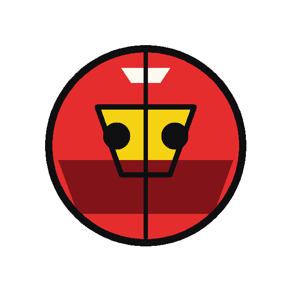

DTF
Outline & Layered Trapping Vector Studio
Inspeção de Bleed Morfológico e Z-Index Hierárquico
Fundo do Tecido:
Camiseta Preta
Camiseta Branca
Grade Transparente
⟲ Reset Zoom
Carregar Gráfico Streetwear
Carregar Logo Tag
ORIGINAL RASTER (BITMAP)
600 x 600 px

−
100%
+
VETOR COM OUTLINE & TRAPPING (SVG PURO)
Preenchimento Sólido Anti-Fresta